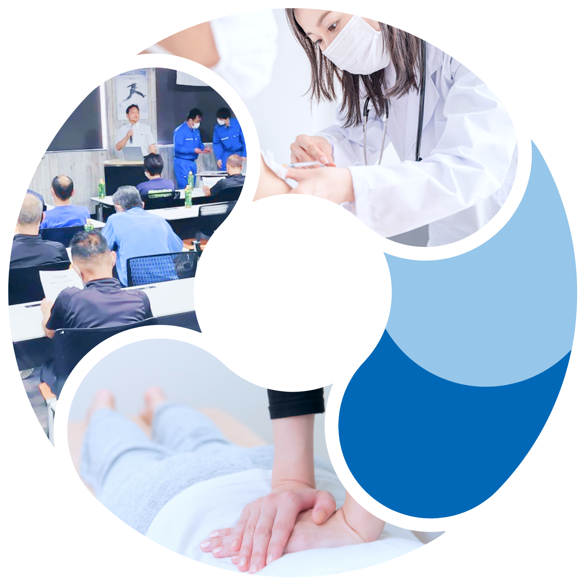
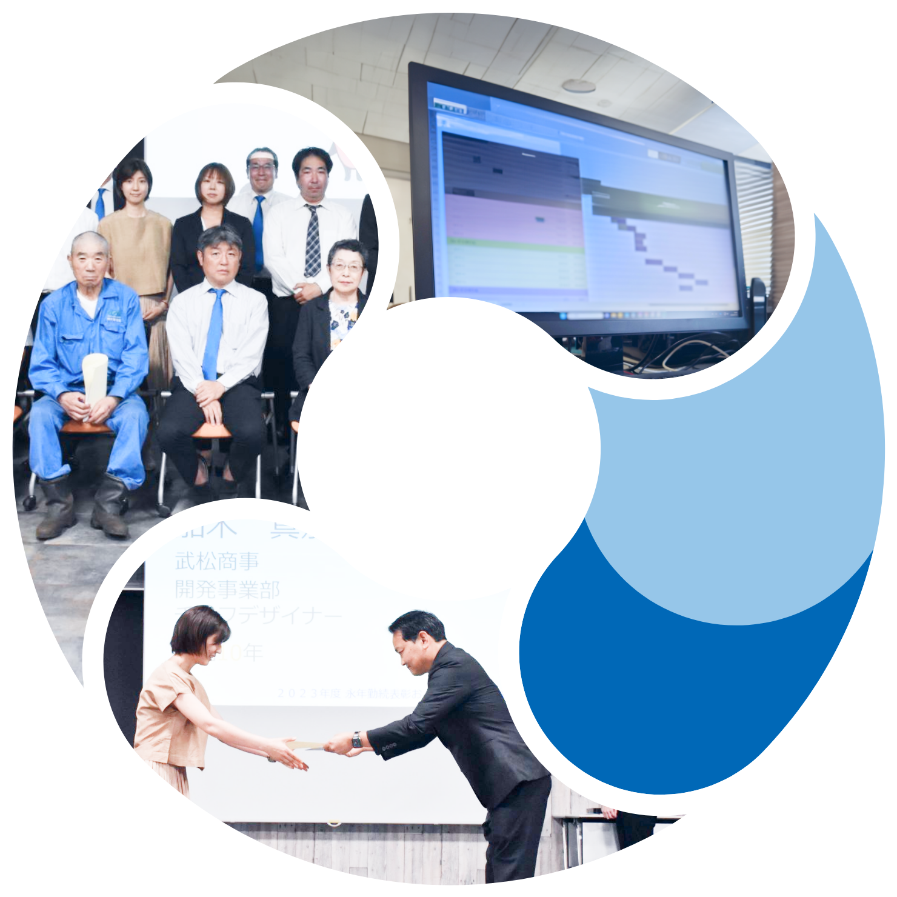
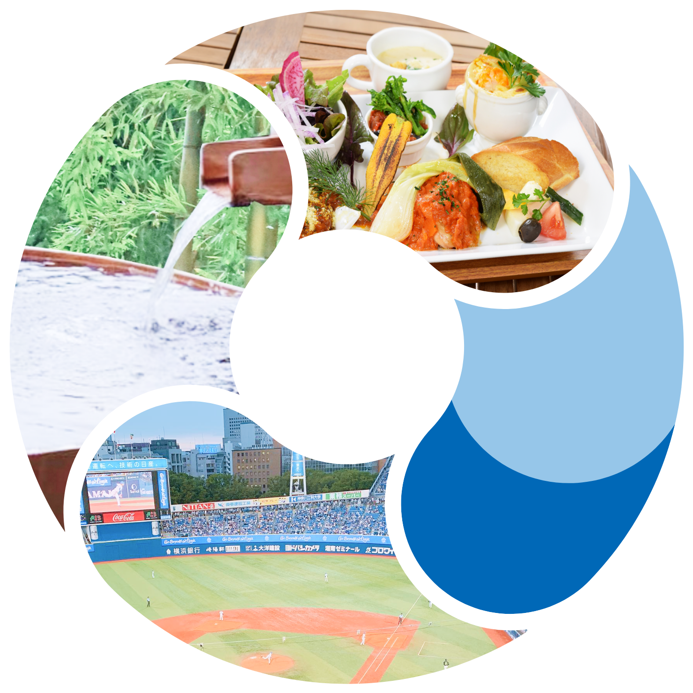

福利厚生制度
社員に安心・元気に
働いて欲しいから
働いて欲しいから
仕事をする上で大切なことは、お給料や処遇等も大事ですがそれだけではありません。その会社の将来性や自身 の職場環境や人間関係など様々な条件が良い状態に整っていること。社員の福利厚生もそのひとつです。福利厚生がどの程度充実しているかにより居心地のよさや社員をどれだけ大切に思っているかが伝わります。だからこそ私たちはより良い内容にできるよう取り組んでいます。
社員とご家族の
生活を安定させるための
支援
生活を安定させるための
支援
社員の経済的な支えとして
社会保険(健康保険・厚生年金保険・労災保険)、厚生年金基金や退職金制度を完備しています。冠婚葬祭時の
祝金・見舞金等を拠出する制度もあります。
また、地方や遠方からの就職者に対しては借上げ社宅
制度を導入しているので住居面でも安心です。
その他、病気や業務上のケガで入院した時の経済的支援のために業務災害補償保険（ハイパーメディカル）にも加入しています。
祝金・見舞金等を拠出する制度もあります。
また、地方や遠方からの就職者に対しては借上げ社宅
制度を導入しているので住居面でも安心です。
その他、病気や業務上のケガで入院した時の経済的支援のために業務災害補償保険（ハイパーメディカル）にも加入しています。
社会保険完備
借上げ社宅制度
通勤手当
冠婚葬祭時の祝金・見舞金
業務災害補償保険
武川 美佐
総務人事担当
チーフ
制度があるから安心ということもある
同業種または会社規模で比較しても、福利厚生に力を入れている方だと思います。遠方から来られた方向けの「借上げ社宅制度」や、ケガだけではなく病気でも入院給付金が補填される「業務災害補償保険」など、実際に制度を利用した方からは「良かった」「助かった」等の声が聞かれます。困った時に支援があるのは安心です。
社員が安心して長く働けるための支援
社員が健康で安全に働くことが第一
健康でなければ働くことができません。
当たり前のことですが、本当に健康と言える方はそんなに多くはありません。年を経るにつれ何かしら劣化していきます。でも自身の体をきちんとメンテナンスしている人は少数です。
そのため、健康担当という専任者を配置し、社員の健康維持増進のために「受診勧告書」を発行したり、「健康だより」を毎月配布したりして、自身の体に目を向けていただくきっかけづくりを行っています。
当たり前のことですが、本当に健康と言える方はそんなに多くはありません。年を経るにつれ何かしら劣化していきます。でも自身の体をきちんとメンテナンスしている人は少数です。
そのため、健康担当という専任者を配置し、社員の健康維持増進のために「受診勧告書」を発行したり、「健康だより」を毎月配布したりして、自身の体に目を向けていただくきっかけづくりを行っています。
インフルエンザ予防接種
定期健康診断
受診勧告書発行制度
ストレスチェック
腰痛防止マッサージサービス
武松グループは
「従業員の健康管理を経営的な視点で考え、戦略的に取り組んでいる法人」として
「従業員の健康管理を経営的な視点で考え、戦略的に取り組んでいる法人」として
横浜健康経営認証を授与しています
社員のキャリアアップを促進するために
会社は社員の成長とともに成長します。
社員の日々の頑張りや、能力・スキルをできるだけ的確に把握し評価すること、またそれに伴い、処遇改善や職位のステップアップ等を支援することが必要です。
そのために人事評価制度を運用し定期的に人事評価を行っています。
併せて、永年勤続表彰や無事故表彰など各種表彰制度を設けています。今後はキャリアアップを促進するために職種別や職位別などの人財育成プログラムの導入を予定。
社員の日々の頑張りや、能力・スキルをできるだけ的確に把握し評価すること、またそれに伴い、処遇改善や職位のステップアップ等を支援することが必要です。
そのために人事評価制度を運用し定期的に人事評価を行っています。
併せて、永年勤続表彰や無事故表彰など各種表彰制度を設けています。今後はキャリアアップを促進するために職種別や職位別などの人財育成プログラムの導入を予定。
整備された適正な人事評価
永年勤続表彰
無事故表彰
武松グループは
未経験の方、資格がない方にも安心して働いていただけるよう
未経験の方、資格がない方にも安心して働いていただけるよう
資格取得支援も行っています
“ワークライフバランス”も大事に
会社や仕事だけではなく、自身やご家族の興味や趣味の時間を設けたり、リラックスした時間を過ごすことも明日への活力を生み出す大切な時間です。
会社として社員の皆さんの“ワークライフバランス”のために支援できることもあると思っています。
会社として社員の皆さんの“ワークライフバランス”のために支援できることもあると思っています。
福利厚生倶楽部
横浜DeNAベイスターズ観戦チケットの配布
お中元・お歳暮品の社員抽選配賦


